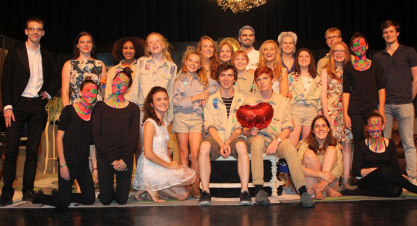
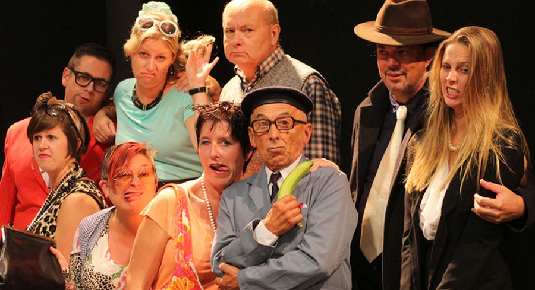

Audities het oneindige verhaal

Op zondag 4 februari waren de audities voor "Het oneindige verhaal". Iedereen wacht in spanning af op de resultaten
Op zaterdag 11 november, tijdens de "seizoenopener" werd het nieuwe logo van toneelkring de Vondeling voorgesteld.
Het logo is een ontwerp van Kevin Vandendriessche
Geschiedenis van toneelkring "De Vondeling"

- 
- 


Bestuur
Evelyne Lagrou (Secretaris)
Tine Hansebout (Penningmeester)
Claudine Balcaen
Jacques Jonckheere
Martine Werbrouck
Eline Fiems
Jean-Michel Derous
Walter Van Thomme (Ere-Voorzitter)
Jan Dewilde (Ere-secretaris)
Jeugdbestuur
Sylke Vanrietvelde (voorzitter)
Matthias Bruynooghe (secretaris)
Jana De Muelenaere
Elien Van Aerde
Jonas Hoste
Claudine Balcaen
 Laatste producties
Laatste producties
Volgende voorstellingen werden recent door toneelkring de Vondeling gerealiseerd:
• "Romeo en Julia" (een jongerenproductie in regie van John Schouppe)
• "Roddel" (een komedie in regie van John Schouppe)
• "Het Jumanji mysterie" (jongerenproductie in regie van Matthijs Vandekinderen)
• "Dag mevrouw Puffin" (blijspel in een regie van Rik Alliet)
• "Wonderland" (de eerste jongerenproductie van toneelkring De Vondeling in regie van Gert De La Marche)
• "Rare joengens, die meiskes" (een komedie in regie van Jan Vanaudenaerde)
Indrukwekkende reeks van producties
Bekijk een chronologische lijst met alle producties die toneelkring "De Vondeling" reeds bracht.